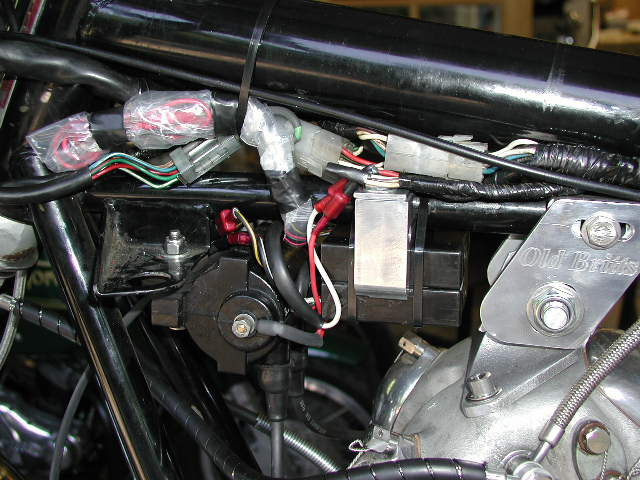
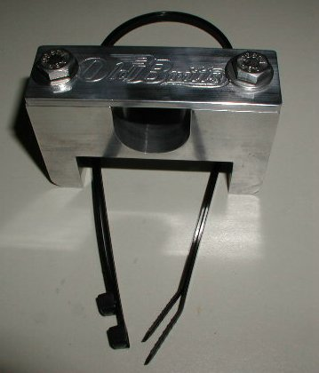

Boyer Black Box Mounting Bracket Kit
The current price for this mounting kit (part # 17-33101/MK) is
$0.00,
as of
03/26/19.

This billet aluminum bracket will hold one or two Boyer black boxes.
This cleans up the rats nest of wires under your tank. As you can see in the pictures, there are two black boxes mounted, so
if one box quits, you can just change the wires and off you go.
If you subscribe to the "fire extinguisher philosophy of life" -- if you have a fire extinguisher you will not need it -- you will double up on
as many breakable items as you can.
Please Note: This mounting bracket will not work with the stock MK3 head steady or some of the aftermarket head
steadies that have a forward mount.
As you can see in the above picture the Old Britts head steady is compact enough to allow the use of this mounting bracket.
We stock the Boyer Electronic Ignition Kit (part # 17-33101,
$0.00)
and spare Boyer Black box (part # 17-33104,
DROPPED)

Mounting Instructions:
- When you receive the above pictured mounting kit, remove the two 1/4 x 20 stainless bolts and washers.
- Fit the bracket under the 1" top frame tube as shown in the first picture.
- Place the top strap, with the Old Britts logo, over the frame tube and insert the two bolts.
- Tighten the bolts until the top strap slightly deforms around the frame tub and firmly secures the bracket.
- Place the Boyer black box or two boxes in the square indent and secure with the two included wire ties as shown in the first picture.
- If you are mounting two boxes, you may want to tape plastic over the spare boxes terminals, so they are nice and clean if you ever need to
use them.
Old Britts Home Page…..Products, Ordering
Norton Parts….
Ignition, Mechanical & Electronic
This page was written and designed by F. H. Eaton
& Associates. If you have any questions or comments, please
contact us at info@fheaton.com